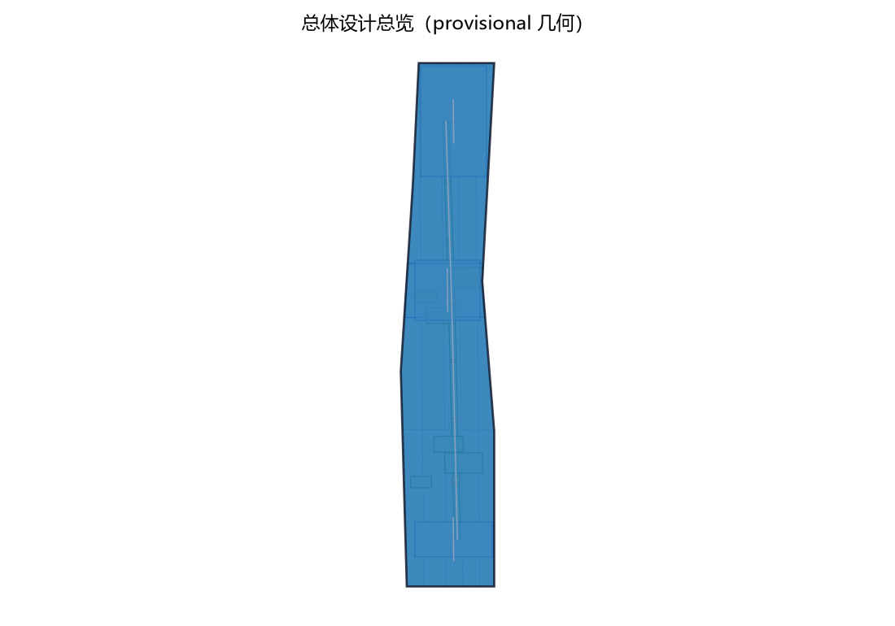
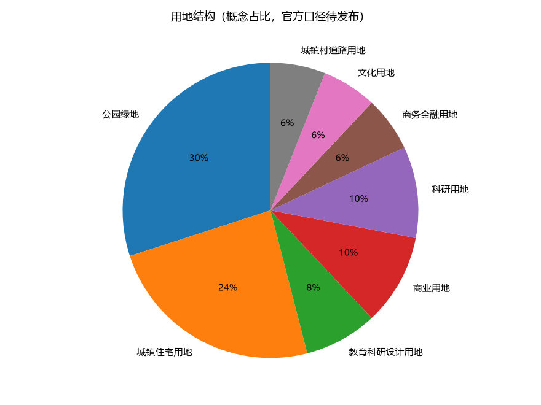
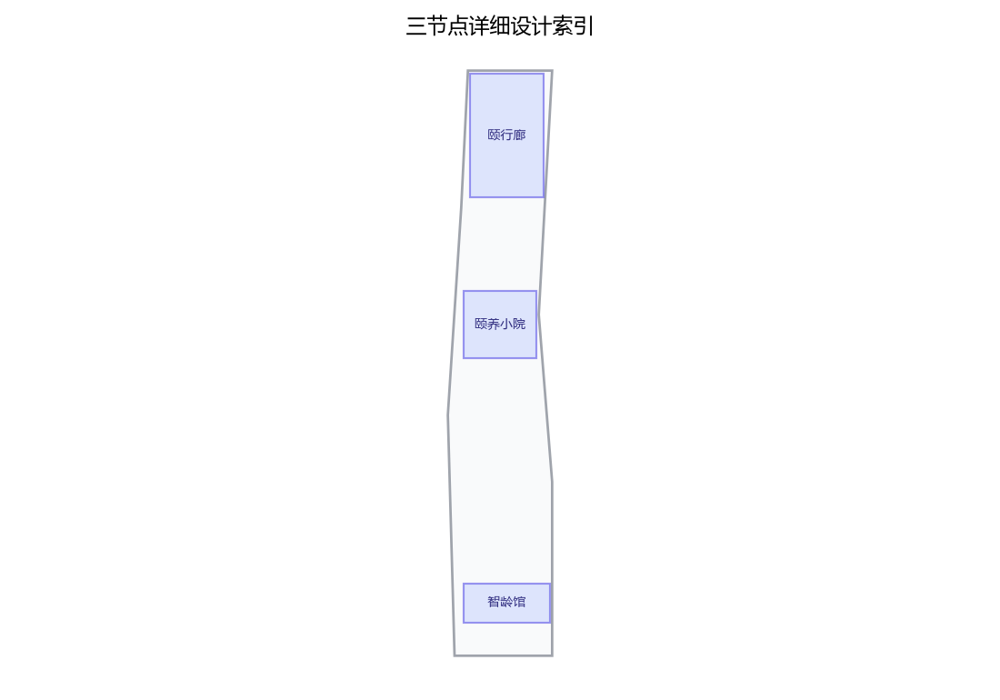
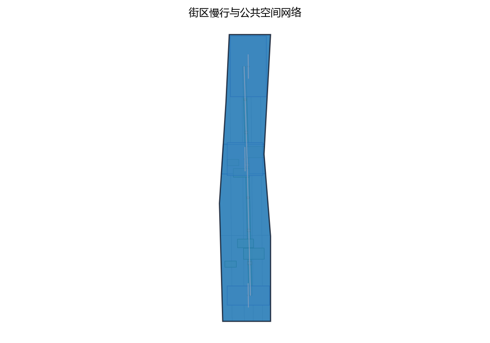
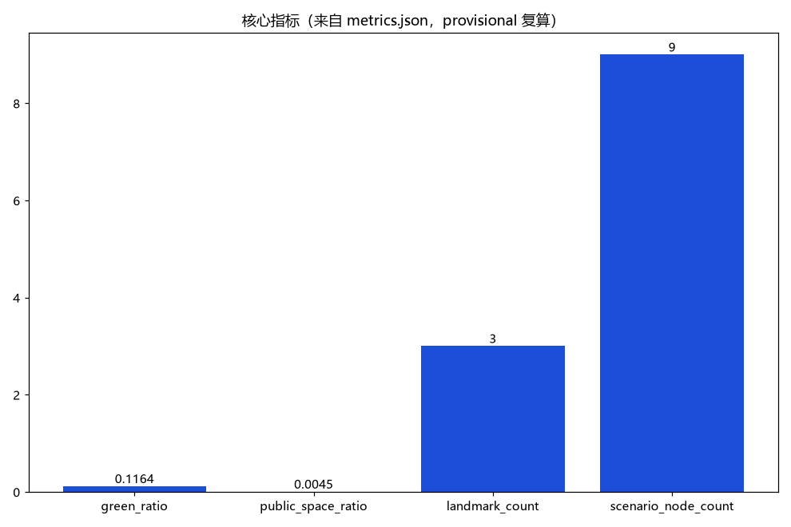

颐养智环：适老化改造与社区养老助老网络（概念）
以「颐养智环（AGE·JZ · 适老化改造与社区养老助老网络）」构建沿京张AI创新带的适老化专项概念（对应公开任务书全龄友好生活维度、公共服务设施维度与城市更新维度）：以「一廊一院一馆」组织适老化改造与助老服务网络，「颐行廊」为适老化慢行与无障碍连廊（众智园侧：连续坡道、休憩座椅、夜间照明与一键求助点）、「颐养小院」为社区养老服务驿站与日间照料复合点（AI原点社区侧：助餐分装、日间照护、健康检测与家属探视空间）、「智龄馆」为数字助老与智能适老体验馆（大钟寺侧：智能手机课堂、智能家居适老体验、防诈宣传与人工帮办），三节点沿京张绿带组织连续的适老服务动线；五类AI+场景（跌倒预警AI、用药提醒AI、助餐订餐AI、数字帮办AI、家属联动AI）仅处理匿名聚合数据、关键决策人工复核、禁止过度监控（不进行个体识别式追踪）；要素机制均为概念建议：适老化改造清单与标准、家庭适老改造补贴登记、养老驿站服务积分、数字助老志愿者结对、社区适老议事；对标案例（北京老旧小区适老化改造公开政策方向、上海适老化改造与一键通公开实践、日本社区综合照护体系公开经验、新加坡康养社区公开实践、住建部城市居家适老化改造公开政策方向）仅按公开渠道信息概述；交通慢行优先、蓝绿空间低干预融合布置，三项formal核心指标（site_area_sqm、green_ratio、public_space_ratio）以本包几何复算、面积以官方文本口径为底，分期实施+年度复算与公示计划。全部为概念建议、参考方案，不给出容积率、建筑高度、具体拆改留、户数、改造量、投资测算或工程实施结论，不编造任何官方数据、改造户数、床位、补贴或政策承诺，不把设想写成已确定安排，基于 provisional 边界，官方数据发布后复算。
「颐养智环（AGE·JZ）」是面向沿京张AI创新带提出的适老化改造与社区养老助老专项概念方案，对应任务书全龄友好生活、公共服务设施与城市更新三个维度。方案以适老化慢行廊道为轴连接三个原创节点——颐行廊（众智园侧，适老化慢行与无障碍连廊）、颐养小院（AI原点社区侧，社区养老助老小院）、智龄馆（大钟寺侧，智慧助老服务馆）——构成"一轴三环"服务网络。本概念对应任务书三大定位：百年京张文化带、都市AI生活体验带、AI融合创新带，并作为AI融合创新带的民生应用试验场；同时点名五大功能：AI全栈自主创新体系、世界级AI创新生态、AI+场景赋能新范式、智能化AI活力城市、AI治理全球话语权——本专项重点承接"智能化AI活力城市"与"AI+场景赋能新范式"，以场景开放反哺创新生态。方案立足海淀，沿京张创新带提出，属provisional概念建议，不构成规划审定、工程可行性或实施承诺。
设计依据与资料清单
资料清单所列公开史料、规划报道、通则规范与国内外算力基础设施公开案例等均为概念工作依据清单，并非本包已获取的数据；本包实际使用的全部数据见 sources.json，未获取项已在假设与缺失数据说明中如实标注。
依据公开征集任务书摘录（agent_taskbook.json，agent.1–6）、官方七维评审量规（docs_review-rubric.md）与投稿模板（PR_TEMPLATE.md）组织章节。空间口径为provisional概念边界，仅使用公开或清权来源资料，假设值标注来源与用途边界，官方数据发布后触发复算；全文原创，未使用未经授权素材。
证据锚点：来源、来源（组织方公告与任务书为文本口径依据）。
三层范围工作框架
三层成果逐级传导：统筹研究输出的算力供需协同判断约束总体设计，总体设计校核的算力节点布局、输配廊道概念骨架与慢行系统落实到节点详设；每层均保留与任务书对应章节的机器可读证据锚点，便于评审对照。
方案按三层推进：统筹研究范围（带域产业与未来城市研究）→总体设计范围（城市更新与控规深度城市设计概念）→重点区域详细设计（三节点深化），三层逐级收敛，从带域战略落到可建设、可运营、可传播的空间单元。
三层各自的证据载体明确：统筹研究以「颐养智环」服务网络结构、人口结构与案例对标为证据（sources.json 可查证条目），总体设计以本包 geometry 层的用地、慢行、蓝绿与设施布局为证据（provisional 边界复算），重点区域以三节点设计深度矩阵与指标复核为证据；几何与指标含义在三层间一致传导——site_area_sqm、green_ratio、public_space_ratio 三项 formal 核心指标均由本包几何复算而非引述。数据缺口如实登记：老年人口分布、助餐与照料需求量、既有无障碍设施底账等官方数据未发布前，一律以假设值标注来源与用途边界，官方数据到位后触发整体复算，本层不预设立场结论。
证据锚点：来源（三层范围划分依据任务书官方文本口径）。
统筹研究范围产业与未来城市研究
产业与城市研究识别算力基础设施的「适配」效应：以算力供给组织沿线高校、科研院所、产业园区与轨道站点的算力需求为可接入、可计量、可服务的算力单元，形成「算力节点—产业片区—社区服务」三级联动结构；未来城市研究仅作方向性预判，不构成对用地、容量与投资的承诺。
围绕老龄社会与银发经济趋势，研究适老化改造、养老助老与AI产业版图的结合点：智慧养老装备、康复辅具、健康数据服务可延展为创新带产业链条的民生侧，探索"数智与人文并重"判断下青年创新与长者安居的街区共存模式，并衔接三区两翼协同回路。
证据锚点：来源（边界为 provisional，研究范围仅作概念示意）。
总体设计范围城市更新与控规深度城市设计
总体设计强调「以绿带为骨架的算力基础设施环境」：依托京张铁路遗址公园绿带组织算力节点、「颐养智环」输配廊道概念骨架与慢行系统，算力设施可逆生长、街道可分时承载展示与科普需求；强调更新而非新建，优先利用存量空间植入轻量可逆算力功能；对控规指标只做校核建议，不预设数值结论。
以城市更新为基本路径，坚持留改提并举、微更新为主，不主张大拆大建。控规深度城市设计仅给出概念性功能分区、街道断面与体量关系建议；容积率、建筑高度等依赖官方控制条件的内容保持unknown，由专业团队依正式数据复核。以绿道与慢行系统组织更新骨架，将适老设施嵌入既有肌理。


证据锚点：来源、来源。
重点区域详细设计
三节点的设施选址均为概念点位，须经现场踏勘、资料核验与主管部门评估及公众意见后重新落位；「颐行廊—颐养小院—智龄馆」沿绿带构成完整算力服务动线，详细平面与剖面以图册与 geometry 层表达。
颐行廊（众智园侧）：连续坡道、无障碍连廊与缓坡化路口构成慢行主链，沿线布置休憩座椅、夜间照明与一键求助，保障长者与弱势人群全天候通行。颐养小院（AI原点社区侧）：存量建筑微改造为日间照料、助餐、健康检测、银龄课堂复合小院，分级照护，助餐兼顾高龄独居老人。智龄馆（大钟寺侧）：智慧助老服务馆，提供辅具共享、智能终端教学、人工服务兜底，坚持"AI辅助、人始终在位"。

证据锚点：空间数据（三节点示意多边形来自本包 geometry/key_areas.geojson）。
AI 创新生态、人才画像与 AI+ 场景
本节将AI能力与交通、产业、空间、公共服务、文化、治理六个领域结合，构建可体验、可展示、可推广的场景体系。人才画像覆盖长者、老人、青年、儿童、居民、游客、学生、通勤、从业者、残疾人、弱势、亲子、银龄等群体，场景坚持全龄、无障碍、适老、儿童友好、包容原则。
| 场景名称 | 空间载体 | AI能力 | 数据与隐私边界 | 运营主体 |
|---|---|---|---|---|
| 助老呼叫AI | 颐行廊一键求助桩与智能照明杆 | 语音呼叫、应急调度与交通接驳协同 | 仅存呼救位置与服务记录，匿名聚合 | 政府购买服务+运营企业 |
| 健康数据匿名聚合AI | 颐养小院健康检测角 | 体征数据匿名聚合与慢病趋势提示，对接社区卫生公共服务 | 匿名聚合、去标识化，不进行个体识别式追踪 | 社区+专业团队 |
| 适老巡检AI | 三节点公共空间与廊道设施 | 无障碍设施破损、照明故障、路面高差巡检 | 仅处理设施影像，禁止过度监控，不留存行人影像 | 运营团队+志愿者 |
| 辅具共享匹配AI | 智龄馆辅具共享区 | 供需匹配、预约轮换、消毒调度，联动康复辅具产业供应链 | 脱敏物品记录，人工复核交接 | 产业联盟+商户 |
| 银龄课堂推荐AI | 颐养小院与大钟寺文化空间 | 文化课程推荐与兴趣匹配 | 兴趣标签匿名聚合，用途明示并纳入文化治理备案 | 高校+志愿者 |
场景开放遵循"先试验、后推广"：呼叫应急、适老巡检、辅具共享三类测试验证场景在试点街区先行并注明试验性；试点期间设置常设公众意见通道与定期意见征集。
运营机制建议如下：运营决策由街道牵头、吸纳企业与居民代表的联合议事会作出，避免单一主体包办；决策事项、资金使用与数据统计经固定渠道向公众公示，接受查阅与质询；监督交由居民志愿者与专业团队组成的监督小组按季度核查并公开意见。配套以社区公约明确权责，以志愿积分激励互助，辅具与活动场次实行预约与轮换，照护按分级清单响应。隐私护栏：所有AI场景坚持匿名聚合、人工复核、不进行个体识别式追踪、禁止过度监控的底线，涉及个人数据的场景应先经公示与备案、允许退出。
证据锚点：来源（AI 生成内容治理表述的参照依据）。
用地、建筑规模与拆改留方案
拆改留坚持留改拆并举：以留为主保留遗址公园肌理与历史遗存，存量建筑功能置换并预留算力设施改造方向（机房接口、展示窗口），拆除仅限经个案论证的局部疏通慢行零星建筑；算力设施以轻介入、可逆、低占地为主，不新增大体量建筑；全部面积为概念口径，官方数据发布后复算。 本层仅提供概念口径，不构成具体地块判断。建议以保留为主、功能置换为辅，拆除仅限危房与违法建设等确需处理情形；用地与建筑规模以假设值建模，标注provisional标记与来源，官方数据发布后触发复算。拆改留比例、容积率、开发时序不作结论性表述。
证据锚点：来源（用地分类名称参照现行国标口径）。
交通、轨道、市政与公共服务设施
以交通慢行优先为核心组织交通概念机制：连续慢行轴贯通三个节点，活动日人流组织与慢行系统一体化，衔接沿线高校、园区与轨道站点；市政以算电协同为概念特色：绿电直供线路、余热回收管网与冷源共享均为概念接口示意，不给出电力负荷、管网容量或工程量结论，优先利用现状设施条件；公共服务配置多语信息、算力科普与研习空间，AI决策均设人工复核。 以颐行廊串联轨道站点与公交末梢，形成无障碍接驳的最后一公里；轨道线位、市政管线等工程内容不作判断。公共服务设施按"片区—节点—楼门"三级配置，助餐点、日间照料、健康检测、辅具回收与既有设施复合利用，避免重复建设。
证据锚点：来源（市政与慢行设计表述的方法参照）。
蓝绿空间、公共空间与城市风貌
构建「绿带为轴、节点公园为珠」的蓝绿公共空间体系：以遗址公园绿带为蓝绿骨架串联沿线小微绿地与开敞空间，算力与展示设施与公园融合布置、宜轻宜透宜可逆，不遮挡历史遗迹与绿带视线；「颐行廊」「颐养小院」「智龄馆」均设置面向公众的科普与体验界面，人工服务兜底；风貌延续京张铁路工业记忆语汇并与算力新设施有序对话，整体导控克制统一。 利用现有绿地与沿线空间形成蓝绿渗透的连续公共空间，颐行廊两侧遮荫植被与休憩座椅结合；风貌延续京张文化带历史语汇，以低干预方式提升无障碍标识、照明与铺装品质，塑造"人文温度+科技质感"气质，避免网红化表达。

证据锚点：来源（蓝绿空间组织的方法参照）。
更新项目清单、实施政策与分期计划
三类项目清单（算力底座/协同机制/服务生态）为概念清单，规模与投资估算均为建议性表述；政策建议（算力券、共享算力池、绿电直供准入、年度碳效公示等）均须依法依规论证，不构成政府或运营方承诺。 清单按"适老慢行完善、社区服务织补、智慧场景试点、文化氛围营造"四类组织，参与主体覆盖政府、企业、高校、居民、社区、运营团队、志愿者、商户与专业团队。实施采用"分期滚动、试点先行"：近期启动1处试点街区，完成颐行廊示范段与颐养小院原型；中期拓展三节点网络并开展场景测试；远期形成沿带可复制推广机制；试点范围经现状核查后由公众意见通道确认优先序。运营配套按年度活动体系组织，形成每周主题日、每月健康日、每季度成果节与年度社区论坛节奏，节日助老周纳入，活动设想均需备案。政策建议聚焦多元筹资、存量用地兼容利用与跨部门协同，以概念建议形式提出。
证据锚点：来源（分期与实施条目对应任务书要求）。
指标体系、面积复算与合规矩阵
核心指标建议：适老慢行廊道连续长度、无障碍设施完好率、一键求助平均响应时间、助餐日均服务人次、辅具共享周转率、公众满意度。三项正式视觉指标（site_area_sqm、green_ratio、public_space_ratio）以provisional边界假设计算并标注来源与公式，官方几何发布后复算；容积率、建筑高度等保持unknown并注明原因。合规矩阵回应agent.1–6：总体概念与命名（agent.1）、创新生态与要素机制（agent.2）、场景卡与人才画像（agent.3）、公共空间与节点（agent.4）、文化叙事（agent.5）、年度活动体系与长期运营（agent.6）。

证据锚点：指标、指标、来源。
风险、版权与合规说明
本方案为概念研究性设计，不构成行政审批依据，也不构成容积率、建筑高度、算力容量、电力负荷、拆改留或工程可行性结论；风险已按边界精度、算力需求预测、绿色电力与余热政策、数据与隐私边界、名称在先权利、政策不确定性、技术成熟度与公众接受度八维度如实登记于 assumptions.json 与缺失数据说明（应对原则：匿名聚合、来源标注、人工复核、意见通道与法定程序）；引用公开资料均已标注来源并注明获取时间，图形、名称与文字为原创或公共领域素材，若与既有标识雷同属巧合；表达不歪曲事实，未经授权不使用肖像商标字体图片论文图像等版权材料；正式实施前须完成多部门联审与公开评估。 主要风险：官方数据缺口导致指标不确定、个人健康数据合规、AI场景被误读为已部署运营、活动设想被误读为已定安排。应对：保持provisional标记与概念口径，坚持隐私护栏与人工复核，活动与政策一律表述为设想与建议。全文原创，引用来自公开来源并留存出处，最终判断留待专业团队与法定程序。
证据锚点：来源（征集规则为权属与合规表述的依据）。
参考资料
参考资料以政府正式发布版本为准，按公开/内部分类存档并标注获取时间：京张铁路历史与遗址公园公开材料（含詹天佑与京张铁路公开史料口径）、北京城市总体规划及分区规划公开口径、北京城市更新专项规划与实施意见及配套文件、任务书 agent.2 要素机制（算力维度）与公开协作规范、国内外算力基础设施公开案例（芬兰LUMI、日本Fugaku、斯德哥尔摩数据中心余热供暖、冰岛地热数据中心，以及贵州贵安数据中心集群、全国一体化算力网「东数西算」、北京人工智能公共算力平台、上海临港智算中心国内公开方向）、现场踏勘记录与自绘分析草图（本项目自行采集）；本包 sources.json 仅收录可查证条目，未虚构任何官方数据或链接。
1. 公开征集任务书摘录：agent_taskbook.json； 2. 官方七维评审量规：docs_review-rubric.md； 3. 投稿组织模板：PR_TEMPLATE.md； 4. 公开渠道可获取的京张文化带历史资料及海淀适老化相关政策报道（使用时补充出处与核验日期）。
证据锚点：来源（本清单首条即组织方公开资料包）。